Step 1: Go to Autodesk Build. Select "Export" and then "Sheets log".
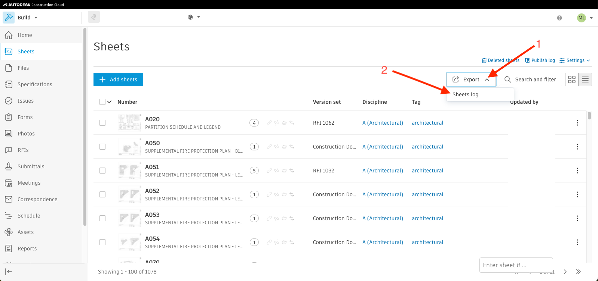Step 2: Select "Only sheet versions in the current view" and then "Export".
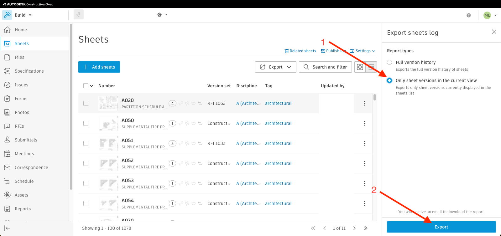Step 3: The file will be sent to your email. Go to your email and select "Download Report".
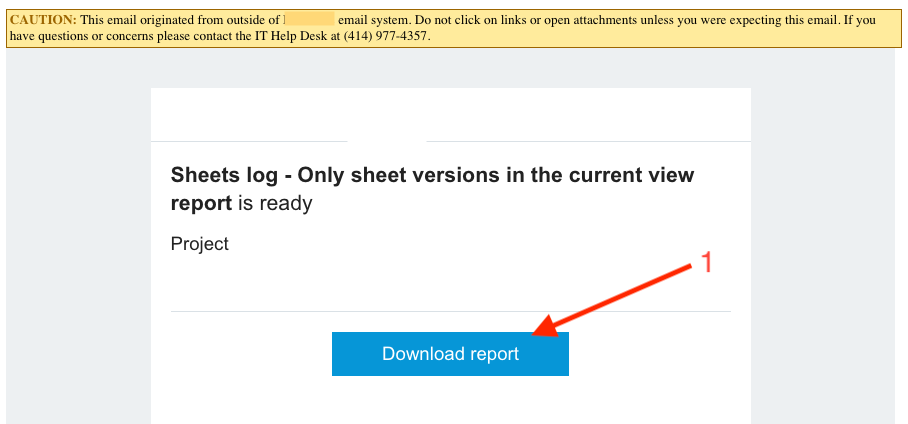Step 4: Open the downloaded excel and go to the 2nd workbook named "Sheets".
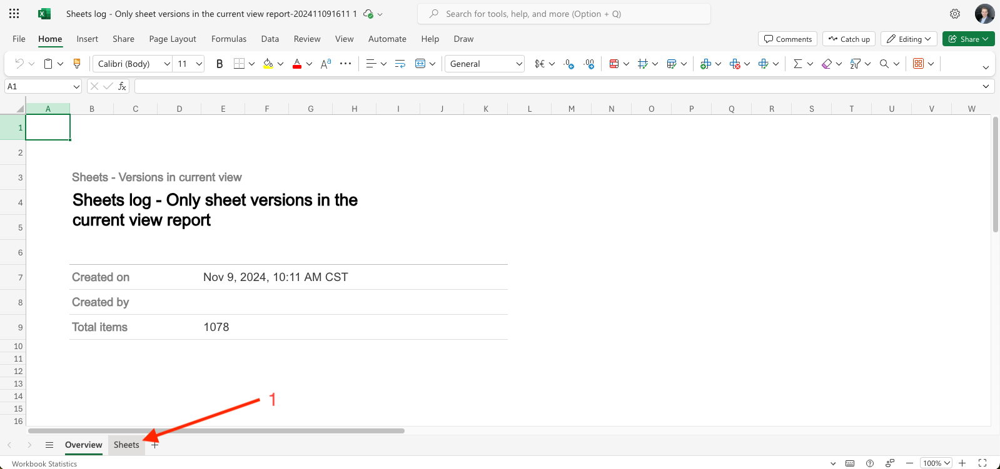Step 5: Select all values in Column A and copy by pressing Ctrl+C.
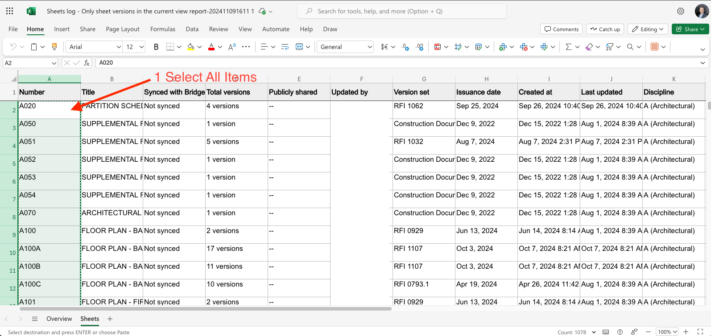Step 6: Go back to Chrome. Select the extension and then paste into the left text box by pressing ctrl+V.
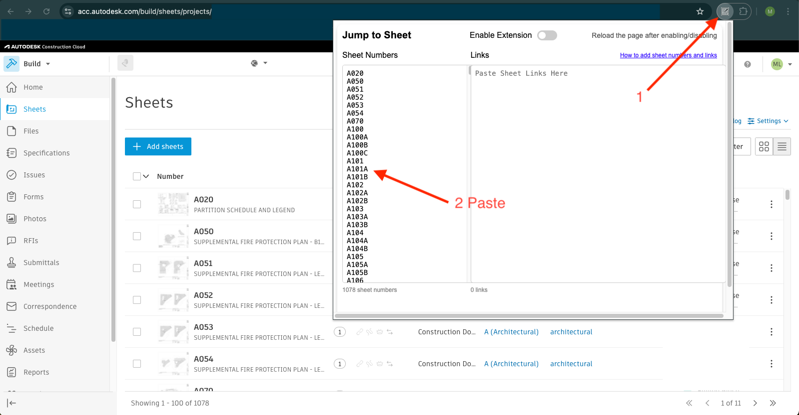Step 1: Select all the sheets on the page by pressing the top checkbox and then "Share".
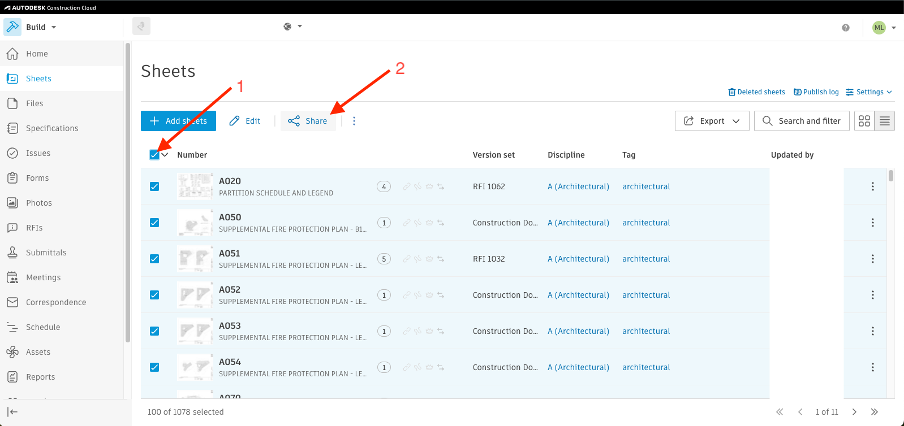Step 2: Select "Links".
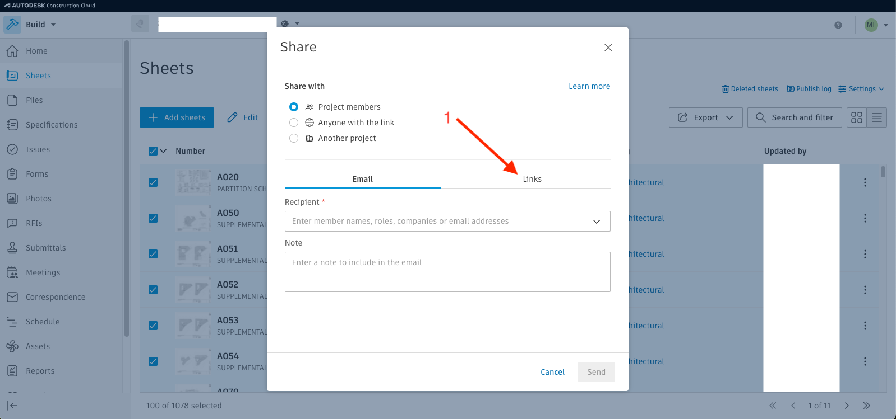Step 3: Select "Copy all"
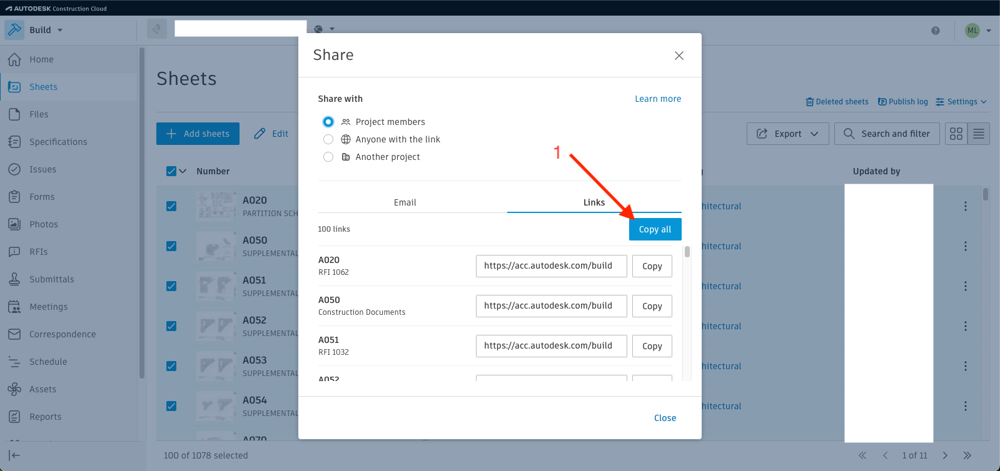Step 4: Select the extension and then paste into the right text box by pressing Ctrl+V.
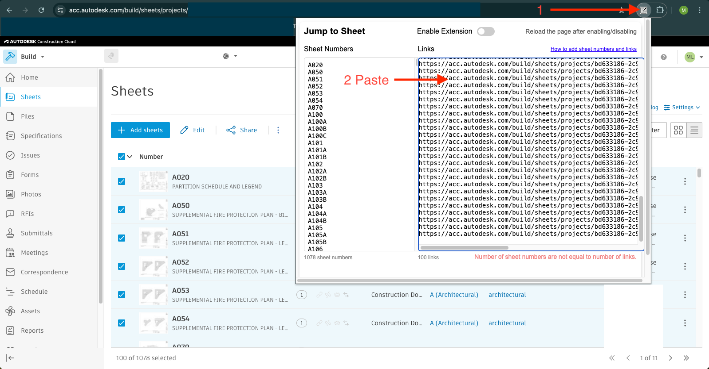Step 5: Select the dropdown arrow next to the top check box and then select "Deselect all sheets". Then press the right arrow in the lower right corner to go to the next page.
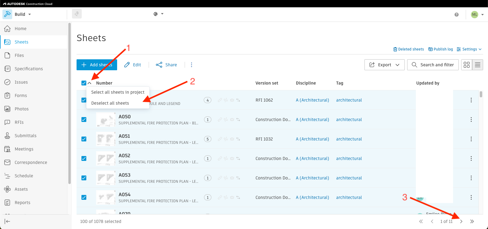Step 6: Go back and repeat steps 1 through 5 until all sheets are pasted into the right text box in the extension.
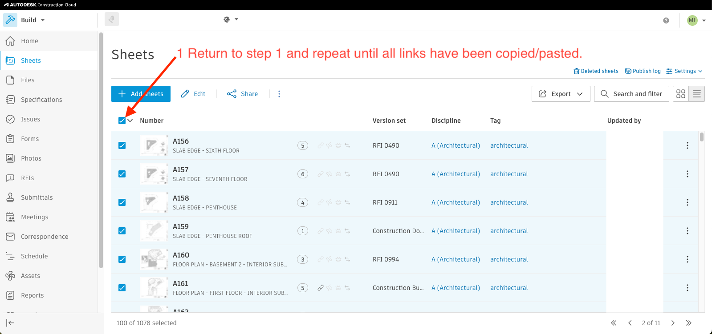Step 7: You will know you successfully pasted all the links when the green text shown below appears. If red text appears, delete everything in the right column and start over at step 1 and on the first page of your sheets list. Once you see green text, enable the extension by pressing the switch.
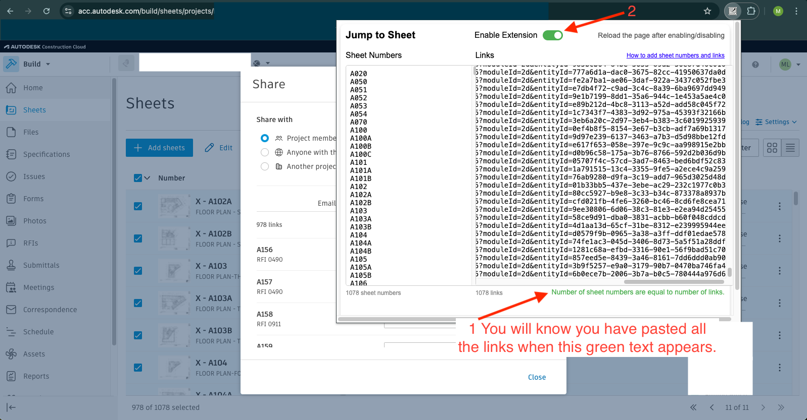Step 8: Go to a plansheet in Autodesk Build and refresh the page. The box below should have appeared. Type a sheet number and press enter.
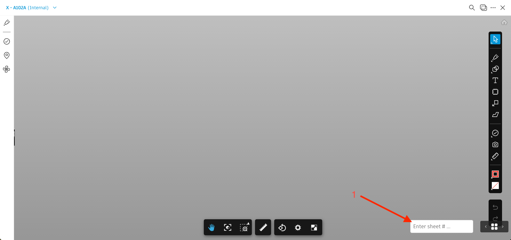